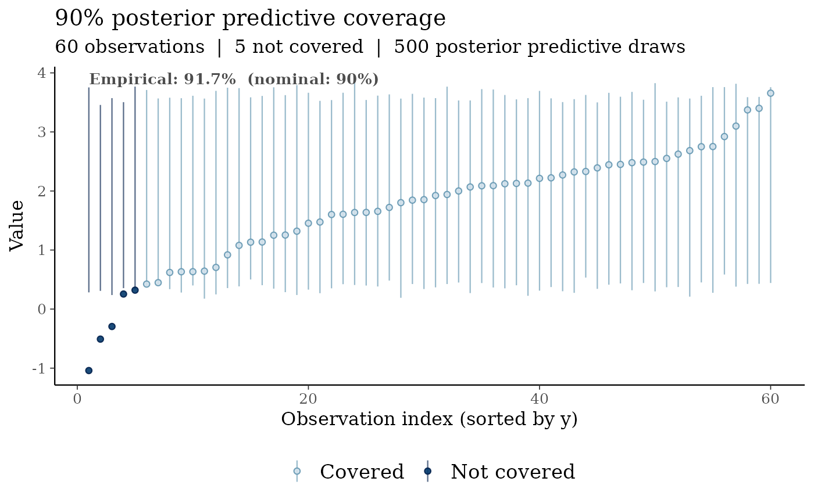
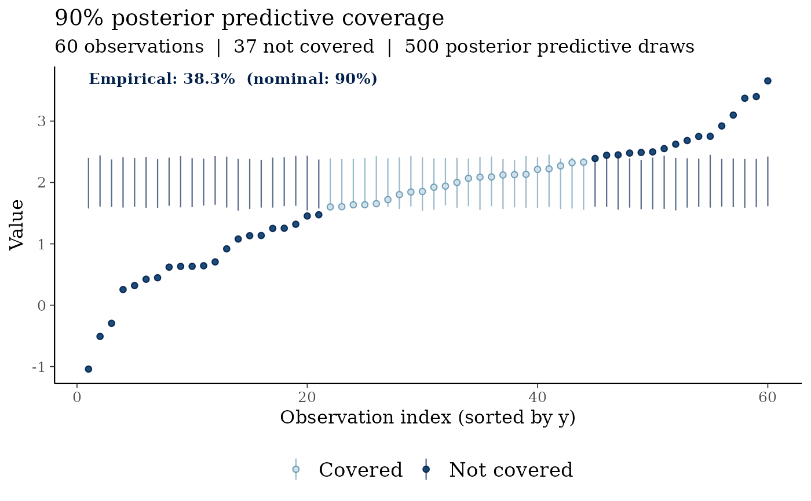
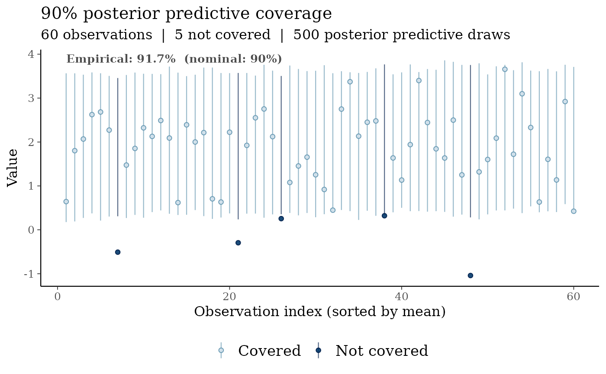

For each observed data point, computes a credible interval from the posterior predictive draws and marks whether the observation is covered. Observations are displayed sorted on the x-axis, with intervals colored by coverage status and the empirical coverage rate annotated.
Departures from the nominal prob coverage indicate model
mis-specification:
Empirical coverage < nominal: the model is over-confident (intervals too narrow).
Empirical coverage > nominal: the model is under-confident (intervals too wide).
Usage
ppc_coverage(
y,
yrep,
prob = 0.9,
sort_by = c("y", "mean", "index"),
point_size = 1.5,
interval_linewidth = 0.4
)Arguments
- y
A numeric vector of observed data values (length \(n\)).
- yrep
A numeric matrix of posterior predictive draws (\(S \times n\)), where \(S\) is the number of draws and \(n = \text{length}(y)\).
- prob
Numeric in (0, 1). Nominal coverage probability for the predictive intervals. Default
0.90.- sort_by
Character string. How to order observations on the x-axis:
"y"Sort by observed value (default). Makes coverage gaps near the tails easy to spot.
"mean"Sort by posterior predictive mean.
"index"Preserve original observation order.
- point_size
Numeric. Size of observed-value points. Default
1.5.- interval_linewidth
Numeric. Width of the interval line segments. Default
0.4.
Value
A ggplot2::ggplot object.
Details
The predictive interval bounds for observation \(i\) are the \((1 - \text{prob})/2\) and \((1 + \text{prob})/2\) empirical quantiles of the column \(\text{yrep}[, i]\). Coverage is defined as \(y_i \in [\text{lower}_i,\, \text{upper}_i]\).
References
Gabry, J., Simpson, D., Vehtari, A., Betancourt, M., and Gelman, A. (2019). Visualization in Bayesian workflow. Journal of the Royal Statistical Society Series A, 182(2), 389–402. doi:10.1111/rssa.12378
Gelman, A., Meng, X.-L., and Stern, H. (1996). Posterior predictive assessment of model fitness via realized discrepancies. Statistica Sinica, 6(4), 733–760.
See also
ppc_pit_hist() and ppc_pit_qq() for LOO-PIT diagnostics;
bayesplot::ppc_intervals() for a related bayesplot visualization.
Examples
set.seed(99)
n <- 60
y <- rnorm(n, mean = 2, sd = 1)
yrep <- matrix(rnorm(500 * n, mean = 2, sd = 1), nrow = 500)
# Well-calibrated model: empirical coverage ≈ nominal 90%
ppc_coverage(y, yrep, prob = 0.90)

# Over-confident model: intervals are too narrow
yrep_narrow <- matrix(rnorm(500 * n, mean = 2, sd = 0.25), nrow = 500)
ppc_coverage(y, yrep_narrow, prob = 0.90)

# Sort by posterior predictive mean instead of observed value
ppc_coverage(y, yrep, sort_by = "mean")
